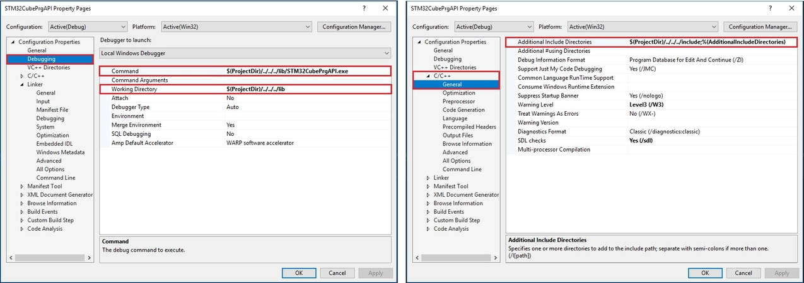
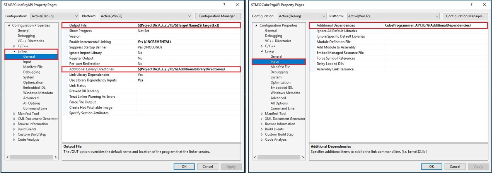
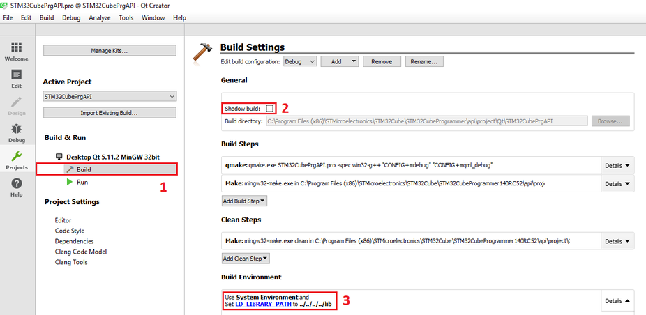

|
STM32CubeProgrammer API
|
|
STM32CubeProgrammer API
|
In addition to the graphical user interface and the command line interface, STM32CubeProgrammer offers a C++ API that you could use to develop your own application and benefit of wide range of features to program STM32 microcontrollers memories (such as Flash, RAM, and OTP) either over debug interface or bootloder interfaces (USB DFU, UART, I²C, SPI and CAN).
This documentation details all types and API functions to use STM32CubeProgrammer features.
The API package is based on the following resources that are ready for use :
| File | Description |
|---|---|
| CubeProgrammer_API.h | Header file contains functions declarations and macro definitions to be used by the CubeProgrammer_API.dll. |
| DeviceDataStructure.h | Header file contains macro definitions to be shared between several functions. |
| CubeProgrammer_API.dll/.so/.dylib | Dynamic Link Library file contains a library of functions and other informations that can be accessed by windows, linux and MacOs programs. |
| CubeProgrammer_API.lib | Import library for use with MSVC compiler. |
We offer various examples developed for use with Visual Studio and Qt Creator IDEs:
To ensure the correct environment for the provided examples, some constraints must be taken into account
The code was developed with Microsoft Visual Studio Community 2017 version 15.6.6 with Windows SDK version : 10.0.16299.0 and it was tested also on Microsoft Visual Studio 2010


The Qt projects are developed with Qt Creator 12.0.1, Qt framework 6.6.0 and MinGW 32 bit compiler and also it can be compiled by MinGW x64.
The shadow build option must be disable to inform Qt that the build should be located in the original Qt project directory.
| Component | Description |
|---|---|
| ExternalLoader | List of external loaders for external Flash programming. |
| FlashLoader | List of flashloaders for internal Flash programming. |
| *.dll | CubeProgrammer API library with all its required dependencies. |
To correctly build the Qt project in linux platform, you should follow the next 3 steps:

| Component | Description |
|---|---|
| ExternalLoader | List of external loaders for external Flash programming. |
| FlashLoader | List of flashloaders for internal Flash programming. |
| *.so | CubeProgrammer API shared library with all its required dependencies. |
To get the default api folder that is integrated into the STM32CubeProgrammer package already installed, go to
/Application/STMicroelectronics/STM32Cube/STM32CubeProgrammer/STM32CubeProgrammer.app/contents/MacOs/api
| Component | Description |
|---|---|
| ExternalLoader | List of external loaders for external Flash programming. |
| FlashLoader | List of flashloaders for internal Flash programming. |
| *.dylib | CubeProgrammer API shared library with all its required dependencies. |